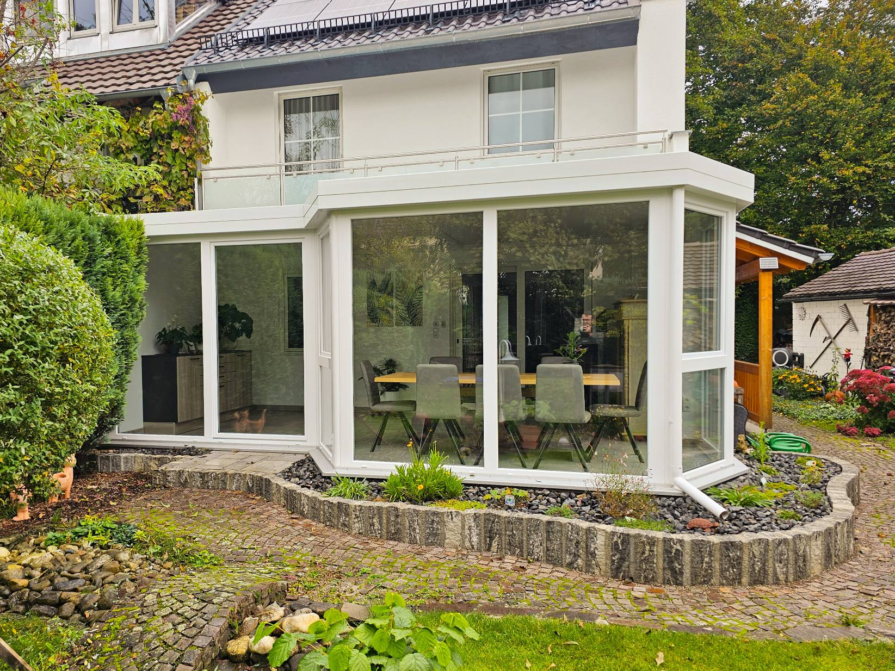
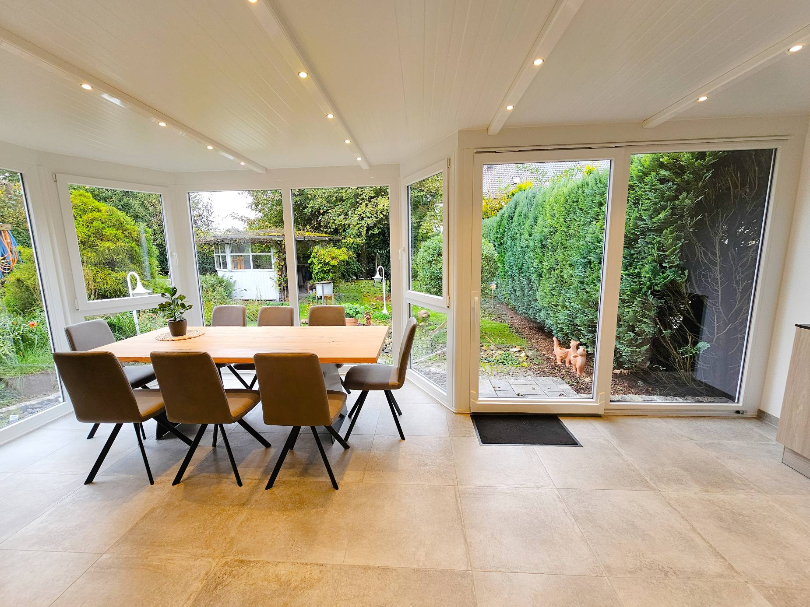

Sonderwünsche, Bestandsfenster auffrischen, Wintergarten-Reparaturen — wir sind für Sie da.
Aus unserer Erfahrung heraus ist der Weg zu etwas Besonderem gar nicht so steinig und kompliziert wie gedacht — schließlich blicken wir auf jahrzehntelange Erfahrung zurück.
Sie haben einen Fensterbestand den Sie erhalten und auffrischen lassen wollen? Oft ist ein Austausch gar nicht nötig. Was Sie jetzt brauchen ist eine fachmännische aber vor allem ehrliche Beratung.
Rufen Sie uns an — wir finden gemeinsam eine Lösung.
📞 08207 / 731 4000 Schreiben Sie unsWir sind Ihr Ansprechpartner für Reparaturen und das Einstellen von Elementen an Aluminium- oder Kunststoffwintergärten. Mit der Zeit lassen sich verschiedene Probleme früh erkennen.
Unsere Monteure haben bereits hunderte von Wintergärten montiert und sind mit zahlreichen Systemen vertraut.


Sonderwunsch oder Reparatur — rufen Sie uns an oder schreiben Sie uns.
Kontakt aufnehmen →